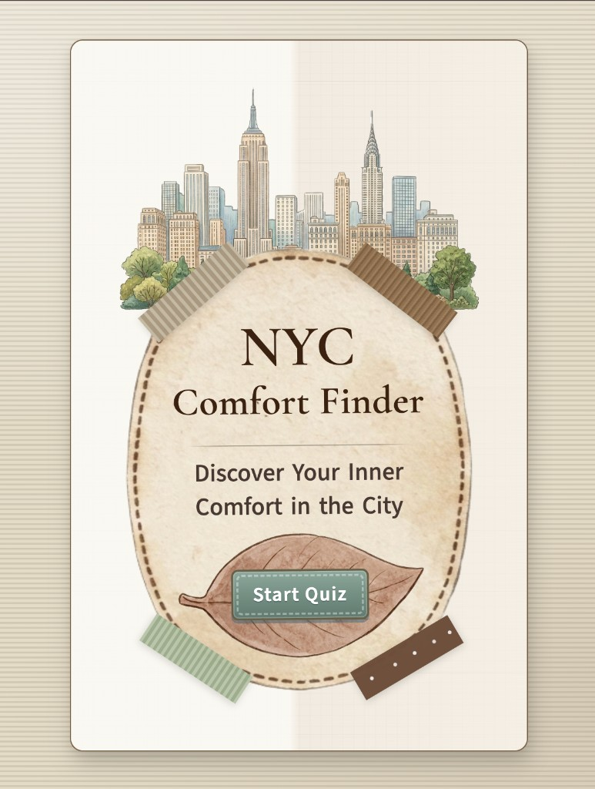
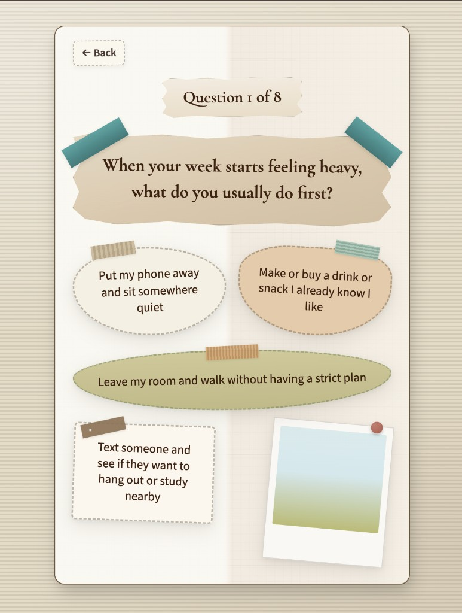

Community Tool or Quiz
NYC Comfort Finder is a reflective quiz built for Indonesian international students in New York City. It is for people who are learning how to find comfort in a loud, fast city while home still feels far away.



Overview
NYC Comfort Finder is a browser-based quiz for Indonesian international students in NYC. It asks how you feel, what kinds of environments you can handle, and what would help in the moment, then suggests comfort paths that fit student life here instead of generic wellness language.
The questions and result copy were refined over several rounds so the guidance would feel concrete rather than vague, and the quiz screens got a layout pass so the flow reads more clearly as you move through answers.
Community
The audience is intentionally narrow right now so the framing can stay honest about displacement, food, language, and the small daily frictions that pile up when you are far from what you know.
The format stays light enough for a packed week because it reads like thoughtful prompts instead of paperwork. I still want the tone to feel calm and human rather than clinical.
A future version could add a country selection step so recommendations can adapt to other backgrounds while keeping the same structure underneath.
Research and insight
The ideas started with lived experience and reading about adjustment and belonging for students abroad. Many people far from family describe loneliness, overstimulation, and missing the routines that used to hold a week together.
New York can sharpen those feelings when pace, noise, and the pressure to keep up run quietly in the background.
Comfort is rarely one thing. Someone might need familiarity, quiet, movement, or a steady ritual, or a low-key place to be with people without performing.
That range pushed me toward outputs that respect context instead of flattening everything into one template.
What I made and why
I built NYC Comfort Finder with HTML, CSS, and JavaScript in the browser. It tracks emotional cues, sensory tolerance, and the kind of support someone is reaching for, then returns a labeled comfort orientation with practical next steps.
Outcomes might point toward a quiet reset, a familiar routine, a reflective outing, or a gentle social setting where connection does not feel like a performance.
The main goal is to give language to the moment when everything feels like too much, and something concrete to try next.
Process and iteration
Visually I was aiming for something quiet and grounded that still feels like New York, soft palettes and journal-like texture, with cues from calm corners such as side-street cafés, small gardens, and bookstores where you can slow down.
Early layouts leaned on heavy scrapbook illustration, extra florals, and busy graphics. I stripped that back over time and ended on a more minimal landing page with one main skyline illustration that carries the city without crowding the rest of the interface.
Reflection
Naming Indonesian international students in NYC meant I could stay honest while I tightened questions and reshaped the quiz flow. Showing drafts around that framing also made clear how quickly a comfort quiz sounds hollow when the cultural context is fuzzier than people’s real situations.
What I want to build next is a straightforward country picker at the beginning so recommendations can pivot with someone’s background while the quiz shell stays recognizable. After that settles, I’d like to go deeper into personalization, possibly around borough or commuting rhythms, or whether someone is leaning toward quiet solitude or gentler togetherness when stress piles up.